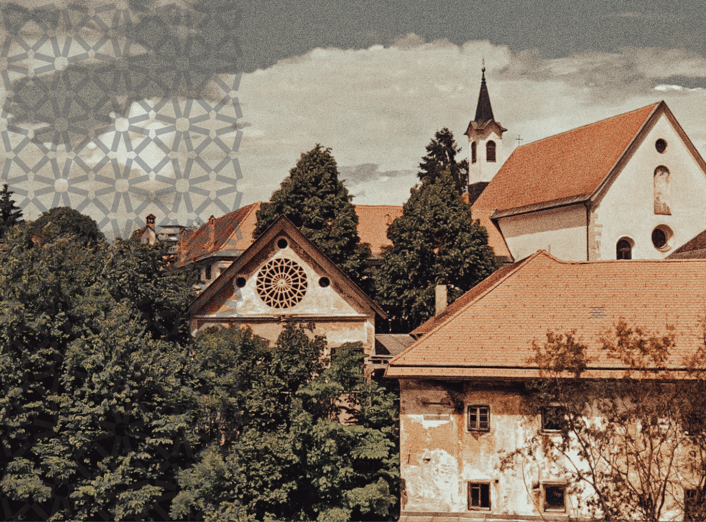
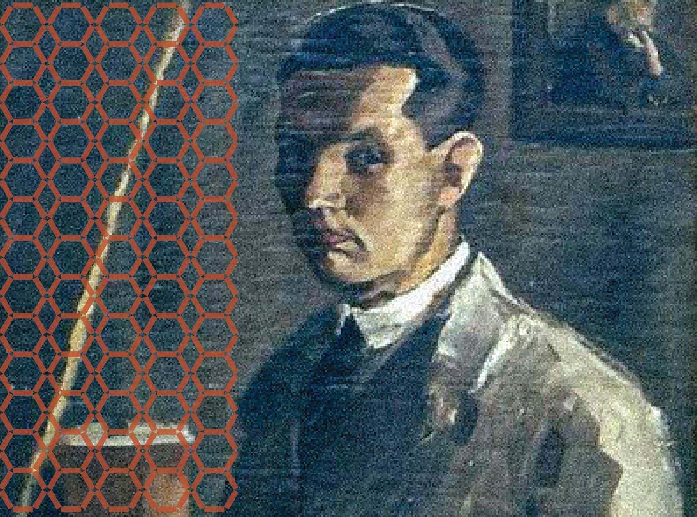
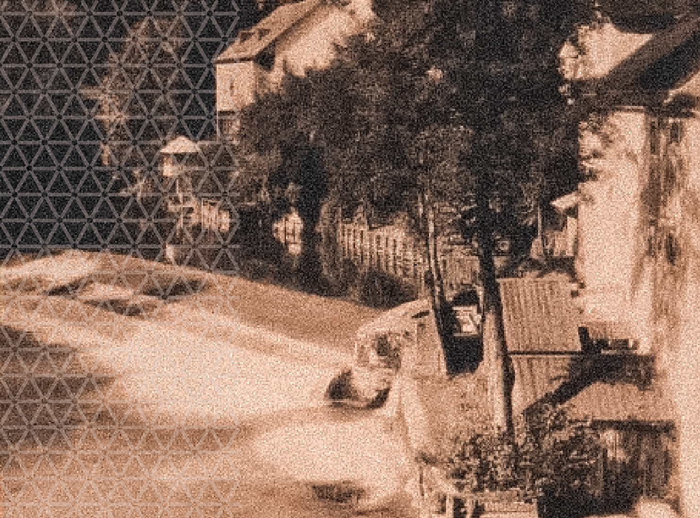
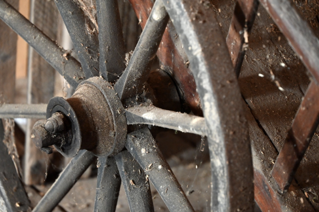
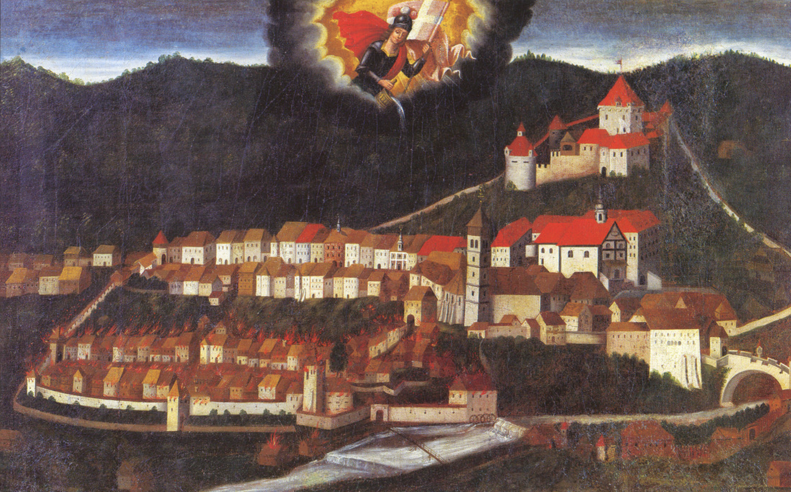
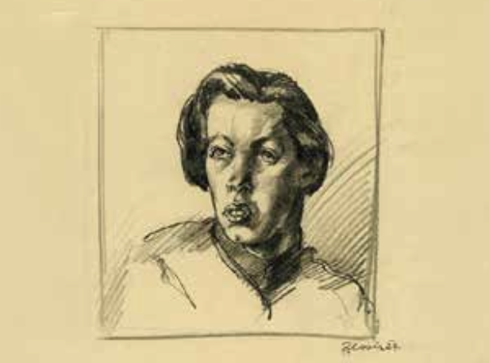
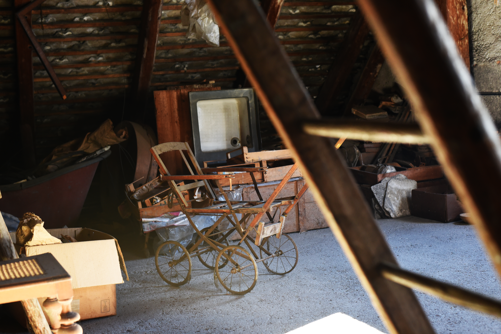

MALEN POD MOSTOM - l. 1309

Odkrij umetnost preteklosti

AKTUALNI DOGODKI

8. 9. 2025
Ob prazniku Malega šmarna bo v Crngrobu odprtje razstave, posvečene Koširjevi domačiji in njenemu utripu nekoč.
Odkrij lepote

Kapucinski samostan
Na kapučinu

Razstave

Naši rokodelci
Škofjeloški pasijon
Med vrtovi